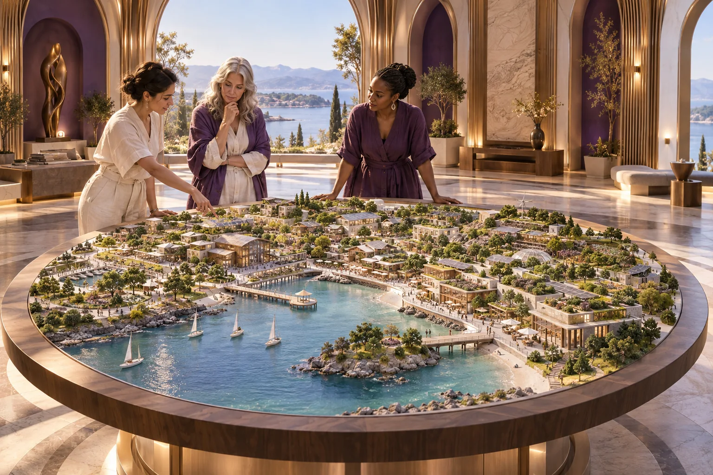

World-leading ecosystems
Connect enterprises, learning, research and shared services so progress in one place can help people elsewhere.

Joyful responsible abundance connects enterprise, intelligence, care and the long work of civilisation.
500 Queens Venture Capital is a plan to develop women as CEOs, enterprise leaders and decision makers, with capital and relationships to put that leadership into practice. Its purpose is joyful responsible abundance: a rewarding life, responsibility for consequences and prosperity that reaches more people.
That includes women building a first enterprise, improving an existing business, leading research or taking responsibility for investment. It also includes people who do not arrive with a startup idea. Community participation, learning and useful work can be the beginning.

AI-generated concept illustration.
Connect enterprises, learning, research and shared services so progress in one place can help people elsewhere.
Give difficult, long-horizon ideas a route towards a clear brief, a practical experiment and a measurable next result.
Develop intelligence that expands human capability, with meaningful choices about access, ownership and benefits.
Help people imagine possible futures through ambitious film, culture and shared stories grounded in a visible source trail.
Explore the systems and components of long-term resilience, keeping working technologies, proposed integration and speculative horizons identifiable.
Luke Nathan Hayes began the idea during COVID while living in Festival Towers, responding to reporting about the small share of venture capital reaching women-led companies. The connection between Hancock Prospecting and 500 Queen Street inspired the arbitrary starting number. Queen's Wharf suggested a global headquarters and Brisbane 2032 added an international horizon.
The current Australian reference is the 2025 State of Australian Startup Funding report: female-only founding teams received 2% of funding, while teams with at least one female founder received 24%, including that 2%. These describe founding-team funding categories. The 500 Queens purpose reaches further into who sets strategy, controls resources, holds ownership and makes consequential decisions.
The proposed path connects community participation, an enterprise idea, AI Queens and experienced mentors, practical leadership and capital for delivery. Enterprise grants, later investment and business succession offer different routes. Productive work can then strengthen livelihoods, shared knowledge and further opportunity.
At least 500 women developing and exercising leadership in Australia is the first scale. The international starting ambitions are 10,000 and 50,000, with open-ended growth beyond them. These are ambitions to pursue, not a count of existing members or funded places.
Mutual Futures contributes paid exploration of work, pathways into ownership, adequate incomes and time for care, learning and intermittent retirement. Grain by Grain contributes the task of solving for existential threats while improving life now. Shared intelligence, facilities and scientific collaboration widen access to the tools for that work.
The vision has been contributed voluntarily by Luke, with no money committed and no operating or fundraising role undertaken. Establishment begins with interested people bringing delivery experience, relationships and backing. The next chapter is practical: gather the people, choose useful work and build the means for women to lead it.